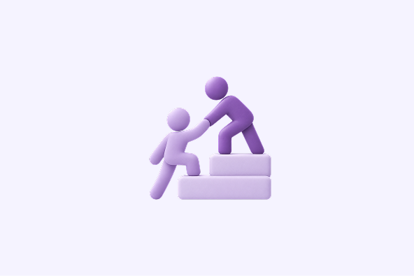
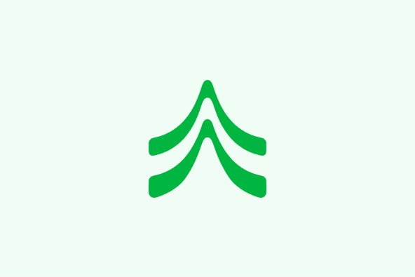

신졸 채용 일정은 졸업 1년 전에 시작된다
일본의 신졸 채용은 졸업 시점이 아니라 졸업 1년 전을 기준으로 움직입니다. 3월 졸업 예정자를 뽑는 전형은 그 전해 3월에 설명회가 열리고, 여름 인턴이 사실상 1차 선발의 자리가 됩니다.
일정을 한 해 늦게 잡으면 신졸 전형 자체가 닫히고, 경력 3년 미만을 뽑는 중도 채용과 경쟁하게 됩니다. 학교를 이미 졸업한 분들이 취업 활동 비자로 체류하며 지원을 이어가는 이유도 여기에 있습니다.
따라서 준비의 첫 단계는 이력서가 아니라 달력입니다. 지원하려는 회사 다섯 곳의 설명회·인턴·본전형 일정을 한 장에 적어 두면 무엇을 먼저 해야 하는지가 정해집니다.
일정표는 회사 이름, 설명회 시기, 인턴 모집 마감, 본전형 시작의 네 칸만 있으면 충분합니다. 칸이 비어 있는 회사는 조사가 덜 된 회사이고, 그 자체가 다음 주에 할 일이 됩니다.
업종에 따라 시기가 한두 달씩 앞뒤로 움직입니다. 컨설팅과 금융은 이르고, 제조와 인프라는 상대적으로 늦습니다. 목표 업종이 두 개 이상이라면 이른 쪽 일정을 기준으로 삼는 편이 안전합니다.

JLPT 는 서류의 선, 면접은 경험의 선
서류 단계에서 JLPT N2는 대체로 최소선으로 쓰입니다. N1이 있으면 선택지가 넓어지지만, N2에서 N1으로 올리는 몇 달이 지원 시점을 뒤로 밀어야 할 만큼 결정적인 경우는 많지 않습니다.
면접에서 보는 것은 급수가 아니라 설명입니다. 자신이 한 일을 일본어로 구조화해 말할 수 있는지, 팀에서 맡은 범위를 구분해 답할 수 있는지가 평가의 중심에 있습니다.
연습은 회사별 질문 목록을 만드는 것부터 시작합니다. 같은 경험을 세 문장, 한 문장, 한 단어로 줄여 말하는 훈련이 면접에서 가장 자주 쓰입니다.
질문 목록은 열 개 안쪽으로 유지하는 편이 좋습니다. 지원 동기, 학생 시절에 힘을 쏟은 일, 강점과 약점, 입사 후 하고 싶은 일 네 가지가 어느 회사에서나 반복됩니다.
답변은 외우지 않고 순서만 정해 둡니다. 상황, 맡은 범위, 판단, 결과의 네 단계로 말하면 일본어가 완벽하지 않아도 내용이 전달됩니다. 면접관이 확인하려는 것은 유창함보다 판단의 근거입니다.
지원 시점을 정하는 세 가지 기준
첫째, 비자입니다. 졸업 후 체류 방법이 정해져 있는지에 따라 지원을 앞당길지 미룰지가 갈립니다. 취업 활동 비자는 기간이 정해져 있으므로, 전형이 열리는 시기와 체류 만료일을 함께 놓고 계산해야 합니다.
둘째, 포트폴리오입니다. 보여줄 결과물이 한 달 뒤에 완성된다면 그 한 달은 기다릴 값이 있습니다. 반대로 완성까지 반년이 남았다면 지금 있는 것으로 지원하고, 전형 중에 채워 넣는 편이 낫습니다.
셋째, 일본어입니다. N2 이전이라면 어학을 먼저 채우고, N2 이후라면 지원과 병행하는 편이 낫습니다. 자신의 조건에 맞는 경로가 헷갈린다면 같은 직무의 멘토에게 먼저 확인해 보시는 방법도 있습니다.
현장 — 도쿄 신졸 준비반 첫 세션
멘트리 클라쓰 3기 첫 세션은 도쿄 시부야에서 열렸습니다. 신졸 지원을 준비하는 스무 명이 모였고, 절반은 아직 학기 중이었습니다.
참가자들이 가장 많이 가져온 질문은 「언제 지원을 시작해야 하는가」였습니다. 일정 이야기로 시작한 세션이 자연스럽게 서류 순서로 이어졌습니다.
현장에서는 지원 일정표를 각자 한 장씩 작성했습니다. 회사 이름을 적는 칸에서 손이 멈추는 분들이 많아, 다음 순서는 회사 조사로 정해졌습니다.
작성 시간은 30분으로 잡았지만 절반은 다섯 칸을 채우지 못했습니다. 이름을 아는 회사와 지원할 수 있는 회사가 다르다는 점이 이 시간에 드러났습니다.
세션 마지막에는 각자 채운 일정표를 옆자리와 바꿔 읽었습니다. 같은 업종을 준비하는 분들끼리 마감일이 서로 어긋나 있는 경우가 있어, 출처를 다시 확인하기로 했습니다.

멘토 세션 — 네 개의 경로
멘토 네 명이 각자의 경로를 나눠 설명했습니다. 신졸로 입사한 경우, 중도 채용으로 옮긴 경우, 대학원을 거친 경우, 취업 활동 비자로 지원한 경우입니다.
같은 회사를 목표로 해도 준비 항목이 달라진다는 점이 분명해졌습니다. 신졸 전형은 일정, 중도 채용은 실적, 대학원 경로는 연구 주제가 각각 중심이었습니다.
네 경로가 공통으로 꼽은 것은 일본어로 자기 경험을 설명하는 연습이었습니다. 급수보다 설명이라는 말이 세션 내내 반복됐습니다.
질의응답에서는 면접 준비 기간을 묻는 질문이 가장 많았습니다. 멘토들은 두 달을 기준으로 답했고, 그 안에서 모의 면접을 세 번 이상 해보길 권했습니다.
이력서를 한 장으로 줄이는 방법에 대해서도 이야기가 이어졌습니다. 프로젝트 수를 줄이고 남긴 항목의 설명을 늘리는 쪽이 서류 통과율이 높았다는 경험이 공통으로 나왔습니다.
다음 기수 — 4기 안내
4기는 가을 학기에 맞춰 준비 중입니다. 일정이 정해지면 인사이트와 메일로 먼저 알려드립니다.
이번 기수의 질문을 모아 커리큘럼을 손보고 있습니다. 회사 조사와 일정 수립에 한 세션을 더 쓰기로 했습니다.
모의 면접은 정원을 줄여 멘토 한 명이 세 명을 맡는 형태로 바꿉니다. 3기에서 한 명당 시간이 부족했다는 의견이 많았습니다.
참여를 검토하시는 분들은 지난 기수 기록을 먼저 보시면 흐름을 잡기 쉽습니다.
지원 시점 — 졸업 1년 전 여름
박서연 님은 졸업 1년 전 여름에 첫 인턴 지원을 넣었습니다. 준비가 덜 된 상태였지만, 전형 일정이 그때 열렸기 때문입니다.
「신졸 전형은 경력을 묻지 않는 대신 준비 기간을 봅니다」라는 말로 그 판단을 설명했습니다. 결과적으로 인턴 경험이 본전형의 이야기 소재가 됐습니다.
지원 시점을 앞당긴 대가로 포트폴리오는 여름 내내 다시 썼습니다. 그 과정이 면접 답변을 정리하는 시간이 됐다고 합니다.
당시 일본어는 N2를 막 취득한 상태였습니다. 급수를 올리는 대신 지원서에 쓸 문장을 다듬는 데 시간을 썼고, 그 판단을 지금도 바꾸지 않겠다고 말했습니다.
인턴은 2주 일정이었습니다. 짧았지만 팀의 개발 흐름을 한 번 통과해 본 경험이 본전형 면접에서 가장 많이 언급된 소재가 됐습니다.
서류 — 무엇을 남기고 무엇을 버렸는가
이력서는 한 장으로 줄였습니다. 학부 프로젝트 여섯 개 중 두 개만 남기고, 남긴 두 개에 각각 다섯 줄을 썼습니다.
기준은 「면접에서 10분 동안 이야기할 수 있는가」였습니다. 설명이 짧아지는 항목은 아예 지웠습니다.
일본어 서류는 표현을 꾸미지 않고, 맡은 범위와 결과를 숫자로 적는 편이 반응이 좋았다고 합니다.
자기소개서는 회사마다 첫 문단만 바꿨습니다. 지원 동기는 회사별로 다르지만 경험의 서술은 같아야 한다는 것이 기준이었습니다.
면접 — 세 번의 질문
1차는 인사 담당자, 2차는 팀 리드, 최종은 임원 면접이었습니다. 질문의 결이 단계마다 달라졌습니다.
1차는 지원 동기와 체류 계획을 확인하는 자리였습니다. 일본에서 계속 일할 의사가 있는지를 에둘러 여러 번 물었다고 합니다.
2차에서는 코드 리뷰를 어떻게 받아들이는지, 의견이 다를 때 어떻게 정리하는지를 물었습니다. 기술 질문보다 협업 방식에 대한 질문이 길었습니다.
최종 면접은 20분으로 짧았습니다. 지금까지의 답변을 다시 확인하는 자리였고, 준비한 역질문 세 개 중 두 개를 썼습니다.
준비 방법을 묻자 같은 직무 멘토와의 모의 면접을 꼽았습니다. 같은 회사·직무의 멘토를 찾는 일부터 시작하길 권했습니다.
일본 이주 첫 달에는 행정 절차가 한꺼번에 몰립니다. 순서를 잘못 잡으면 같은 창구를 두 번 가야 하는 일이 생깁니다.
가장 먼저 구약소에서 전입 신고를 하고, 그 자리에서 마이넘버 카드와 국민건강보험을 함께 처리하는 편이 빠릅니다. 재류 카드 주소 기재도 같은 창구에서 끝납니다.
은행 계좌와 휴대폰은 주민표가 나온 뒤에 여는 편이 수월합니다. 회사 입사일이 정해져 있다면 급여 계좌 개설 기한을 먼저 확인해 두시는 것이 좋습니다.
주민표는 창구에서 두 부 이상 받아 두시면 은행과 통신사에서 각각 제출할 때 다시 가지 않아도 됩니다. 마이넘버 카드는 신청 후 수령까지 몇 주가 걸리므로, 그 사이에 필요한 서류는 통지 카드로 대신합니다.
연금은 전입 신고와 함께 가입 절차가 안내됩니다. 회사에 입사하면 후생연금으로 넘어가지만, 입사 전 공백 기간이 있으면 국민연금 납부 유예를 신청해 두는 편이 좋습니다.
첫 달 지출은 예상보다 큽니다. 집 계약의 초기 비용에 보증금과 사례금이 함께 붙는 경우가 많아, 이주 전에 두 달치 생활비를 따로 준비해 두시는 것을 권합니다.